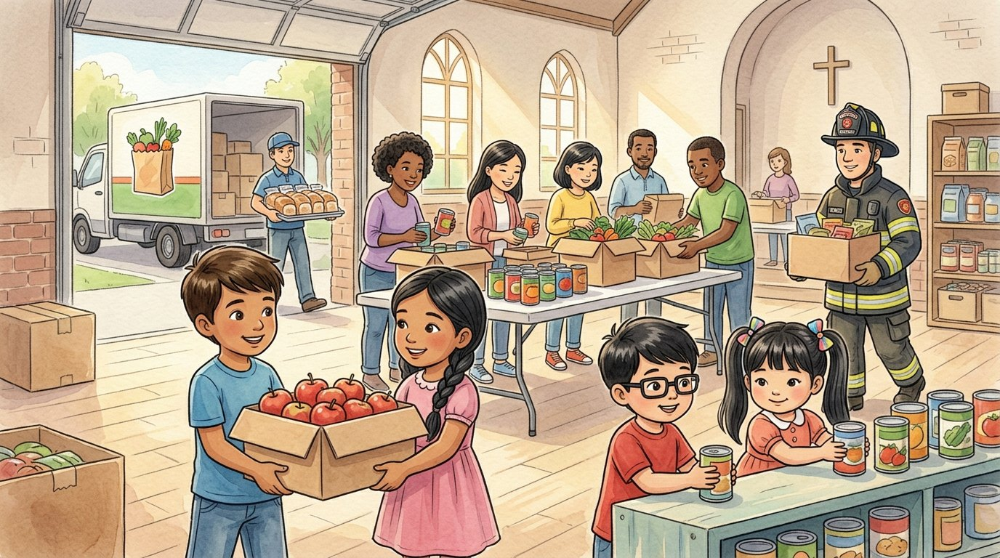

Grade 3 · Social studies · SS.3.CV.1
The food bank apples
A story about families, businesses, volunteers and government helping each other.
Social studies words you will learn
Tap a green word to see what it means.
The story
One Saturday, Israel's mom took the children to help at the neighborhood food bank. It collects food for families who need it.
The people who work there are : people who help without being paid, because they want to make their better. Israel and Lucía carried boxes of apples; Adrián and Génesis stacked cans on the low shelves.
The food bank is an : a group of people who work together to reach a goal. Its goal is that nobody in the neighborhood goes hungry.
In the middle of the morning, a grocery store truck arrived with bread and fruit. " help too," the director explained. "The grocery store the food it didn't sell, so it doesn't go to waste."
Then a firefighter came in with a huge box. "We held a food drive at the fire station," he said. "And the city government lends us this hall and helps us deliver food to older people."
"Everyone helps!" Lucía realized. "Families, businesses, volunteers and the government." Each one adds a piece, like the pieces of a puzzle.
At the end of the day, a woman came in with two small children. She took home a box with rice, beans, milk and the apples Israel had carried. She thanked them with a huge smile.
"When we work together, everyone ," said Israel's mom. "The community becomes stronger and kinder."
That night at dinner, Israel's decided to go back the next month. "And this time," said Adrián, "I'll carry a big box."
Glossary
- community
- A group of people who live in the same place or share something.
- volunteer
- A person who helps without being paid.
- organization
- A group of people who work together to reach a goal.
- business
- A place or company that sells goods or services, like a grocery store.
- donate
- To give something away to help others.
- family
- A group of people joined by kinship or love who take care of each other.
- benefit
- To get something good or helpful.
Questions
Choose the correct answer. If you make a mistake, the story shows you where the answer is.
-
Question A. What is a volunteer?
Volunteers help without being paid, because they want to make their community better.
-
Question B. What is the food bank's goal?
The food bank is an organization whose goal is that nobody in the neighborhood goes hungry.
-
Question C. How does the grocery store help?
The grocery store donates the food it didn't sell, so it doesn't go to waste.
-
Question D. Who helps the food bank?
Lucía realized that everyone helps: families, businesses, volunteers and the government.
-
Question E. What happens when we work together?
When we work together, everyone benefits and the community becomes stronger.